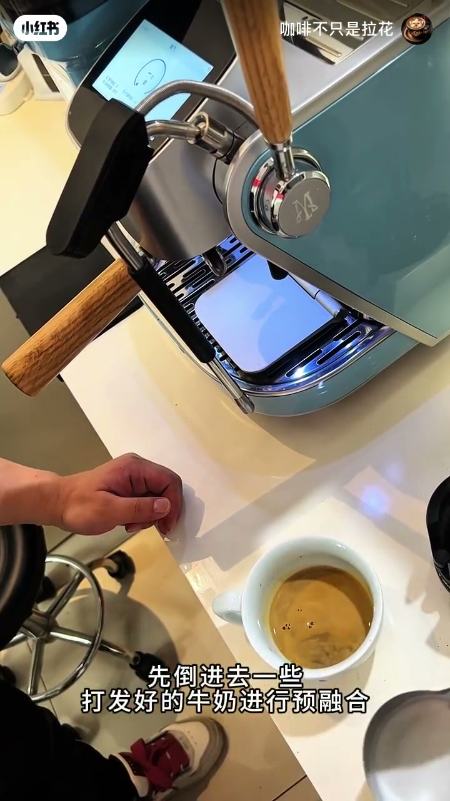
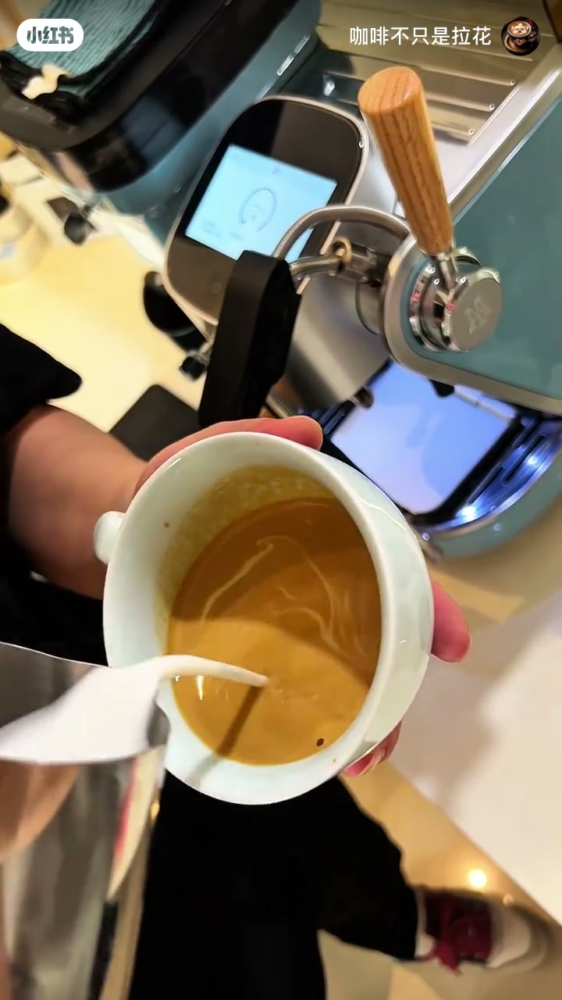
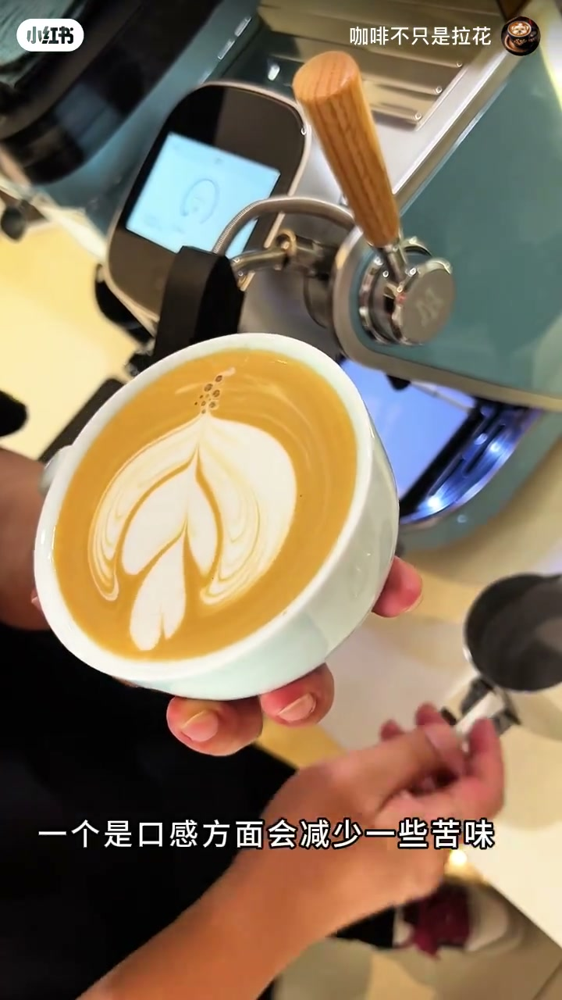

内容要点
咖啡萃取出来油脂很少、看起来清汤寡水，还能拉花吗？UP 主咖啡不只是拉花给出的答案是：可以，关键是先预融合。先倒进一些打发好的牛奶进行预融合，旋转让液面不再清汤寡水；预融合后液面支撑性变弱、牛奶流动性变强，融合时要控制好奶量和注入速度。他总结预融合的两点好处：口感上减少一些苦味，液面颜色更浅更干净、减少深色的胶感。
知识结构
油脂少时先倒打发好的牛奶预融合，旋转搅拌，液面不再清汤寡水。
预融合后液面支撑性变弱、牛奶流动性变强，融合时要控制奶量、控制注入速度。
口感减少一些苦味；液面颜色稍浅更干净，减少深色的胶感。
没有油脂也能拉花：先预融合把液面「养」起来，再控制奶量与注入速度。预融合的额外收益是口感更不苦、液面更干净少胶感——油脂不足时这是最实用的补救手法。
00:00-00:16预融合：让清汤寡水的液面先活起来
视频直接演示：「今天给大家分享一下，萃取油脂很少的情况下怎么拉花。先倒进去一些打发好的牛奶进行预融合，就这样转，使劲转。」
效果立竿见影：「现在再看，是不是就没有那么清汤寡水的了？因为已经提前预融合了。」预融合的本质是用牛奶先把液面「养」起来，弥补油脂不足导致的支撑性缺失。

00:16-00:47控制变量与预融合的好处
预融合后状态有变化，需要注意：「在融合的时候要控制好奶量。有过预融合的液体，表面支撑性会变弱，所以拉花的时候你会感觉牛奶的流动性变强了，这时候就需要控制好牛奶的注入速度就行。」
最后 UP 主总结预融合的两点好处（经本人多次验证）：「一个是口感方面会减少一些苦味；再一个就是液面颜色稍微浅一点、干净一些，减少了深色的胶感。」


完整转录（16段）
以下文本由 Whisper medium 模型自动转录，可能存在少量识别误差，已尽可能修正。
今天给大家分享一下
这种萃取油脂很少的情况下怎么拉花
先倒进去一些打发好的牛奶进行预融合
就这样转 使劲转
现在再看是不是就没有那么清汤寡水的了
因为已经提前预融合了
所以在融合的时候要控制好奶量
有过预融合的液体表面支撑性会变弱
所以在拉花的时候
你会感觉牛奶的流动性变强了
这时候就需要控制好牛奶的注入速度就行
经过本人多次验证提前预融合过的咖啡
有两点好处
一个是口感方面会减少一些苦味
再一个就是液面颜色稍微浅一点
干净一些减少了深色的胶感